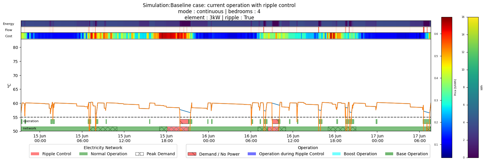
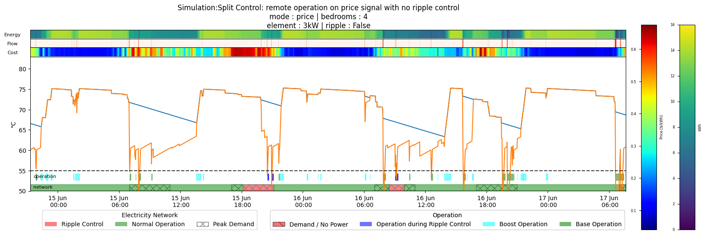
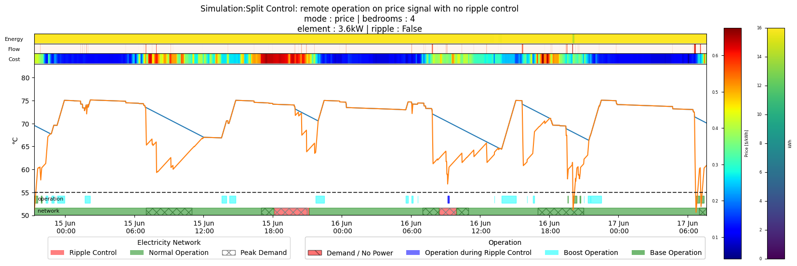
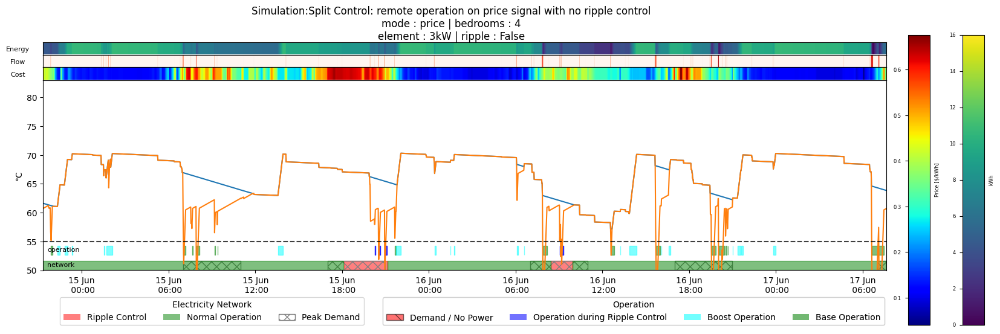

# Initialize an empty dictionary
strategies = {}
# Add some keys and values to the dictionary
# stategies[0] = 'description1'
strategies[0] = {'name': 'Baseline case: current operation with ripple control',
'operation': 'continuous',
'bedrooms': 4,
'element' :3,
'Tset_H' : 60,
'Tset_L' : 60,
'radius' : 0.22,
'height' : 1.1,
'ripple' : True}
strategies[1] = {'name':'Baseline case: current operation with no ripple control',
'operation': 'off_peak',
'bedrooms': 4,
'element' :3,
'Tset_H' : 60,
'Tset_L' : 60,
'radius' : 0.22,
'height' : 1.1,
'ripple' : False}
strategies[2] = {'name': 'Split Control: remote operation on price signal with no ripple control',
'operation': 'price',
'bedrooms': 4,
'element' :3,
'Tset_H' : 75,
'Tset_L' : 60,
'radius' : 0.22,
'height' : 1.1,
'ripple' : False}
strategies[3] = {'name': 'Split Control: remote operation on price signal with no ripple control',
'operation': 'price',
'bedrooms': 4,
'element' :3.6,
'Tset_H' : 75,
'Tset_L' : 60,
'radius' : 0.3,
'height' : 1.4,
'ripple' : False}
strategies[4] = {'name': 'Split Control: remote operation on price signal with no ripple control',
'operation': 'price',
'bedrooms': 4,
'element' :3,
'Tset_H' : 70,
'Tset_L' : 60,
'radius' : 0.22,
'height' : 1.1,
'ripple' : False}Use the model in repeatable conditions to estabish different patterns from operation
Load some representative wholesale power price data
Establish some operational parameters and control strategies
Set a function to run the different strategies operating on the thermostat as this is all that the strategy can effectively control
Add functionality for a thermostat
df = {}
time_period = '2020-06'
power = load_power(path = Path('../data/'), ripple_control=True)#/home/cjp/cylinder/data/powerprices.csv
for strategy in strategies:
env = HWC(T_set=strategies[strategy]['Tset_H'],
radius=strategies[strategy]['radius'],
height=strategies[strategy]['height'],
element=strategies[strategy]['bedrooms'],
U=.8)
temp = []
flow = load_demand(path = Path('../data/drawprofiles'),
bed=strategies[strategy]['bedrooms'],
unit=3).loc[:,'flow']
for row in power.loc[time_period].itertuples(): # go through a set time period
action = 0
pwr = [1,1]
# adjust for temperature
env._thermostat()
# establish if there is power going to the element based on the thermostat state and the strategy in relation to ripple control
if env.thermostat[0] == 1: # if the thermostat high temperature sensor is on then need to look to the control strategy
if strategies[strategy]['operation'] == 'off_peak': # if the strategy is to use the thermostat high temperature sensor then the element is on
action = ~row.peak
elif strategies[strategy]['operation'] == 'continuous': # if the strategy is to use the thermostat high temperature sensor then the element is on
action = 1
elif strategies[strategy]['operation'] == 'price': # if the strategy is to use the thermostat high temperature sensor then the element is on
# action = 1 if row.cost < 0.1 else 0
action = 1 if row.costrank_8h < 0.2 else 0
pwr = [0,1]
if env.thermostat[1] == 1: # if the thermostat base temperature sensor is on then the element is on
action = 1
if (strategies[strategy]['ripple']) & (row.ripple_control): # if ripple control is on then override the thermostat state
action = 0
pwr[1] = 0 # no power to the element
env._update_model(action = action , flow = 2* flow.loc[row.Index]*60)
temp.append([strategy,
action,
row.ripple_control * strategies[strategy]['ripple'] ,
*env.thermostat.copy(),
*env.temperatures.copy(),
env.z,
env.volume])
tmp = pd.DataFrame(temp,
columns=['strategy',
'action',
'ripple_control_demand',
'thermostat_high',
'thermostat_base',
'T0',
'T1',
'z',
'volume'])
df[strategy] = pd.concat([power.loc[time_period].reset_index(),
flow.loc[time_period].reset_index(drop=True),
tmp.assign(energy = lambda df: df.volume.mean()*4.2*((df.T0*df.z + df.T1*(1-df.z))-55))],axis=1).set_index('timestamp')for n in range(5):
plot_sim(strategies[n], df[n].iloc[20000:23500])/home/cjp/cylinder/cylinder/utils.py:37: FutureWarning: iteritems is deprecated and will be removed in a future version. Use .items instead.
for row in ser.iteritems():



data = []
for n, sim in enumerate(df):
t_mean = (0.7*df[n].T0.mean()+ 0.3*df[n].T1.mean())
peak_demand = (df[n].peak*strategies[n]["element"]*df[n].action).sum()/len(df[n])
# print(f'demand at peak : {100*peak_demand:.2f}%')
local_kwh = (df[n].action*strategies[n]["element"]/60*df[n].thermostat_base*(df[n].ripple_control!=1)).sum()
remote_kwh = (df[n].action*strategies[n]["element"]/60*df[n].thermostat_high*(df[n].thermostat_base!=1)).sum()
# print(f'Local kWh : {local_kwh:.2f}',end=' ')
# print(f'Remote kWh : {remote_kwh:.2f}')
local_cost = (df[n].cost*strategies[n]["element"]/60*df[n].action*df[n].thermostat_base).sum()
remote_cost = (df[n].cost*strategies[n]["element"]/60*df[n].action*df[n].thermostat_high*(df[n].thermostat_base!=1)).sum()
# print(f'Local Cost : {local_cost/local_kwh:.2f}',end=' ')
# print(f'Remote Cost : {remote_cost/remote_kwh:.2f}')
loss_of_service = 100*(df[n].T0<55).sum()/len(df[n])
days = (df[0].iloc[-1].name-df[0].iloc[0].name).days
# print(f'Days : {days:.2f}')
# print(f'Loss of Service : {100*loss_of_service:.2f}%')
data.append([*strategies[n].values(),
df[n].iloc[0].name,
df[n].iloc[-1].name,
df[n].volume.mean()*1000,
peak_demand,
local_kwh,
remote_kwh,
local_kwh+remote_kwh,
local_cost,
remote_cost,
local_cost+remote_cost,
t_mean,
loss_of_service])
summary = pd.DataFrame(data,columns=list(strategies[0].keys())+['start_time', 'end_time', 'volume','peak_demand', 'local_kwh', 'remote_kwh', 'total_kwh', 'local_cost', 'remote_cost', 'total_cost', 't_mean', 'loss_of_service'])
summary['peak_reduction'] = 100*(summary.peak_demand-summary.loc[0,'peak_demand'])/summary.loc[0,'peak_demand']
summary['cost_reduction'] = 100*(summary.total_cost-summary.loc[0,'total_cost'])/summary.loc[0,'total_cost']summary.T| 0 | 1 | 2 | 3 | 4 | |
|---|---|---|---|---|---|
| name | Baseline case: current operation with ripple c... | Baseline case: current operation with no rippl... | Split Control: remote operation on price signa... | Split Control: remote operation on price signa... | Split Control: remote operation on price signa... |
| operation | continuous | off_peak | price | price | price |
| bedrooms | 4 | 4 | 4 | 4 | 4 |
| element | 3.0 | 3.0 | 3.0 | 3.6 | 3.0 |
| Tset_H | 60 | 60 | 75 | 75 | 70 |
| Tset_L | 60 | 60 | 60 | 60 | 60 |
| radius | 0.22 | 0.22 | 0.22 | 0.3 | 0.22 |
| height | 1.1 | 1.1 | 1.1 | 1.4 | 1.1 |
| ripple | True | False | False | False | False |
| start_time | 2020-06-01 00:00:00 | 2020-06-01 00:00:00 | 2020-06-01 00:00:00 | 2020-06-01 00:00:00 | 2020-06-01 00:00:00 |
| end_time | 2020-06-30 23:59:00 | 2020-06-30 23:59:00 | 2020-06-30 23:59:00 | 2020-06-30 23:59:00 | 2020-06-30 23:59:00 |
| volume | 167.258393 | 167.258393 | 167.258393 | 395.840674 | 167.258393 |
| peak_demand | 0.22 | 0.229931 | 0.137083 | 0.105333 | 0.158194 |
| local_kwh | 301.9 | 292.95 | 141.75 | 107.7 | 167.75 |
| remote_kwh | 0.0 | 0.0 | 136.3 | 282.12 | 117.75 |
| total_kwh | 301.9 | 292.95 | 278.05 | 389.82 | 285.5 |
| local_cost | 73.782102 | 75.731868 | 40.302617 | 31.663776 | 47.431951 |
| remote_cost | 0.0 | 0.0 | 19.244775 | 39.456843 | 16.580938 |
| total_cost | 73.782102 | 75.731868 | 59.547392 | 71.120619 | 64.012889 |
| t_mean | 58.963058 | 59.060973 | 70.199214 | 70.702455 | 65.860602 |
| loss_of_service | 1.208333 | 0.87963 | 0.0 | 0.0 | 0.113426 |
| peak_reduction | 0.0 | 4.513889 | -37.689394 | -52.121212 | -28.093434 |
| cost_reduction | 0.0 | 2.642601 | -19.292904 | -3.60722 | -13.240627 |